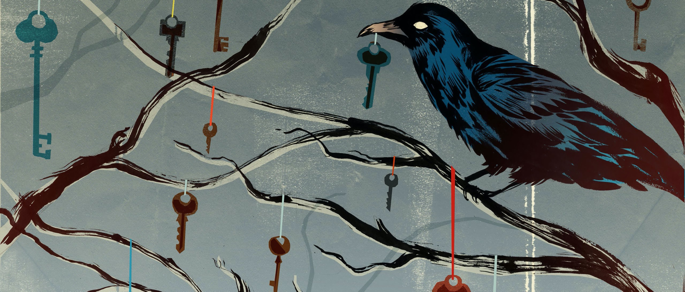

Publications
Small Contributions to Science

-
Motwani, Keshav, Leeana D. Peters, Willem H. Vliegen, Ahmed Gomaa El-sayed, Howard R. Seay, M. Cecilia Lopez, Henry V. Baker et al. "Human Regulatory T Cells From Umbilical Cord Blood Display Increased Repertoire Diversity and Lineage Stability Relative to Adult Peripheral Blood." Frontiers in Immunology 11 (2020): 611.
-
Wen-I Yeh, Howard R. Seay, Brittney Newby, Amanda L. Posgai, Filipa Botelho Moniz, Aaron Michels, Clayton E. Mathews, Jeffrey A. Bluestone, Todd M. Brusko. Avidity and Bystander Suppressive Capacity of Human Regulatory T Cells Expressing De Novo Autoreactive T-Cell Receptors in Type 1 Diabetes. Frontiers in Immunology, 2017. DOI: https://doi.org/10.3389/fimmu.2017.01313
-
Jacobsen LM, Posgai A, Howard R. Seay, Haller MJ, Brusko TM. T Cell Receptor Profiling in Type 1 Diabetes. Curr Diab Rep. 2017 Oct 11;17(11):118. doi: 10.1007/s11892-017-0946-4. Review. PubMed PMID: 29022222.
-
Howard R. Seay, Amy L. Putnam, Judit Cserny, Amanda L. Posgai, Emma H. Rosenau, John R. Wingard, Kate F. Girard, Morey Kraus, Angela P. Lares, Heather L. Brown, Katherine S. Brown, Kristi T. Balavage, Leeana D. Peters, Ashley N. Bushdorf, Mark A. Atkinson, Jeffrey A. Bluestone, Michael J. Haller, and Todd M. Brusko. Expansion of human Tregs from cryopreserved umbilical cord blood for GMP-compliant autologous adoptive cell transfer therapy. Molecular Therapy-Methods & Clinical Development. 2016 Dec 24.
-
Howard R. Seay, Erik Yusko, Stephanie J. Rothweiler, Lin Zhang, Amanda L. Posgai, Martha Campbell-Thompson, Marissa Vignali, Ryan O. Emerson, John S. Kaddis, Dave Ko, Maki Nakayama, Mia J. Smith, John C. Cambier, Alberto Pugliese, Mark A. Atkinson, Harlan S. Robins, Todd M. Brusko. Tissue distribution and clonal diversity of the T and B cell repertoire in type 1 diabetes. JCI Insight. 2016;1(20):e88242. doi:10.1172/jci.insight.88242.
-
Seung-Chul Choi, Tarun E. Hutchinson, Anton A. Titov, Howard R. Seay, Shiwu Li, Todd M. Brusko, Byron P. Croker, Shahram Salek-Ardakani and Laurence Morel. The Lupus Susceptibility Gene Pbx1 Regulates the Balance between Follicular Helper T Cell and Regulatory T Cell Differentiation. The Journal of Immunology 197.2 (2016): 458-469.
-
Christopher A. Fuhrman, Wen-I Yeh, Howard R. Seay, Priya Saikumar Lakshmi, Gaurav Chopra, Lin Zhang, Daniel J. Perry, Stephanie A. McClymont, Mahesh Yadav, Maria-Cecilia Lopez, Henry V. Baker, Ying Zhang, Yizheng Li, Maryann Whitley, David von Schack, Mark A. Atkinson, Jeffrey A. Bluestone, and Todd M. Brusko. Divergent Phenotypes of Human Regulatory T Cells Expressing the Receptors TIGIT and CD226. 20 May 2015, 10.4049/jimmunol.1402381
-
Yiming Yin, Seung-Chul Choi, Zhiwei Xu, Daniel J. Perry, Howard R. Seay, Byron P. Croker, Eric S. Sobel, Todd M. Brusko and Laurence Morel. “Normalization of CD4+ T cell metabolism reverses lupus” Science Translational Medicine. 2015 Feb 11;7(274):274ra18. doi: 10.1126/scitranslmed.aaa0835. PMID: 25673763
-
Debalina Sarkar, Moanaro Biswas, Gongxian Liao, Howard R. Seay, George Q. Perrin, David M. Markusic, Brad E. Hoffman, Todd M. Brusko, Cox Terhorst, and Roland W. Herzog. “Ex vivo expanded autologous polyclonal regulatory T cells suppress inhibitor formation in hemophilia.” Molecular Therapy—Methods & Clinical Development 1 (2014).
-
Jason R. O’Rourke., Sara A. Georges, Howard R. Seay, Stephen J. Tapscott, Michael T. McManus, David J. Goldhamer, Maurice S. Swanson, and Brian D. Harfe. “Essential role for Dicer during skeletal muscle development.” Developmental biology 311, no. 2 (2007): 359-368.